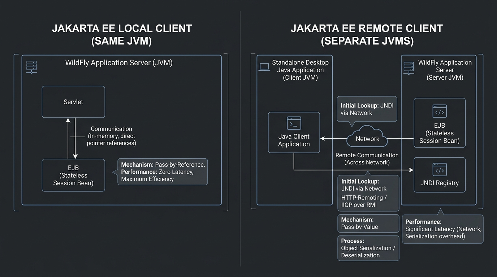

<title>Local vs Remote Clients</title>
<meta name="description" content="Calling a bean from the same JVM vs across the network: @Local, @Remote, pass-by-reference vs pass-by-value.">
<link rel="stylesheet" href="assets/css/styles.css">
<script>window.PAGE = "10-local-remote-clients";</script>

<main class="page">

  <h1>Unit 10 · Local vs remote clients</h1>
  <p class="lede">Whatever calls a bean is its <strong>client</strong>. If the caller lives in the
    <em>same JVM</em> as the bean, it’s a <strong>local</strong> client. If it’s in another process or
    on another machine, it’s a <strong>remote</strong> client. The choice changes performance and how
    arguments are passed.</p>

  <div class="callout"><span class="callout__i">↩︎</span>
    <div class="callout__b"><b>Recap</b> A JVM is the running Java process (Unit 00). A servlet inside
      WildFly shares WildFly’s JVM; a standalone console app is a separate JVM.</div>
  </div>

  <span class="eyebrow">concept</span>
  <h2>The two models side by side</h2>
  <figure>
    
    <figcaption><b>Takeaway:</b> local calls are ordinary method calls in RAM. Remote calls copy every
      argument across a network — orders of magnitude slower.</figcaption>
  </figure>

  <div class="tablewrap"><table>
    <thead><tr><th></th><th>Local client</th><th>Remote client</th></tr></thead>
    <tbody>
      <tr><td>Runs</td><td>Same JVM as the bean</td><td>Different JVM / machine</td></tr>
      <tr><td>Arguments passed</td><td><strong>By reference</strong> — same object in memory</td><td><strong>By value</strong> — serialized copy over the wire</td></tr>
      <tr><td>Speed</td><td>Nanoseconds</td><td>Milliseconds (sockets, marshaling)</td></tr>
      <tr><td>Interface</td><td><code>@Local</code>, or no interface at all</td><td><code>@Remote</code> is <em>mandatory</em></td></tr>
      <tr><td>Argument types</td><td>Anything</td><td>Must implement <code>java.io.Serializable</code></td></tr>
      <tr><td>Changes the bean makes to a passed object</td><td>Visible to the caller (same object)</td><td>Lost — the bean edited its own copy</td></tr>
    </tbody>
  </table></div>

  <div class="callout callout--key"><span class="callout__i">✦</span>
    <div class="callout__b"><b>Rule of thumb</b>
      Beans that call each other thousands of times a second should be <code>@Local</code> — network
      and copying cost would crush them. Use <code>@Remote</code> only when the caller genuinely lives
      elsewhere.</div>
  </div>

  <span class="eyebrow">concept</span>
  <h2>Local — three ways to expose a bean</h2>
  <pre><code>// 1. No interface at all — every public method is a local view
@Stateless
public class OrderService {
    public void processOrder() { ... }
}

// 2. An explicit @Local interface
@Local
public interface CalculatorLocal { int add(int a, int b); }

// 3. Injected into a co-located servlet with @EJB
@WebServlet("/primes")
public class PrimeServlet extends HttpServlet {
    @EJB private PrimeCalculatorLocal primeCalculator;   // container wires it in
}</code></pre>

  <div class="bench" data-run="primes">
    <div class="bench__head"><span class="dot"></span><span class="kind">try it</span><span class="mode">live — edit the limit</span></div>
    <pre class="bench__code" contenteditable="true" spellcheck="false"><code>int limit = 50;
// PrimeCalculatorBean.getPrimesUpTo(limit)  — called locally from the servlet</code></pre>
    <div class="bench__controls">
      <button class="btn-run" type="button">Run</button>
      <button class="btn-ghost" type="button" data-reset>Reset</button>
      <span class="bench__hint">Try 100 or 200. This runs a JS twin of the prime logic.</span>
    </div>
    <pre class="bench__out" aria-live="polite"></pre>
  </div>

  <span class="eyebrow">concept</span>
  <h2>Remote — a standalone client over the network</h2>
  <pre><code>@Remote
public interface StringReverseRemote {
    String reverseString(String input);        // String is Serializable — fine
}</code></pre>
  <pre><code>// standalone console app, separate JVM
Properties props = new Properties();
props.put(Context.INITIAL_CONTEXT_FACTORY,
          "org.wildfly.naming.client.WildFlyInitialContextFactory");
props.put(Context.PROVIDER_URL, "remote+http://localhost:8080");
Context ctx = new InitialContext(props);

StringReverseRemote svc = (StringReverseRemote) ctx.lookup(
    "ejb:/server-ejb/StringReverseBean!com.demo.remote.StringReverseRemote");

System.out.println(svc.reverseString("Jakarta Enterprise Beans"));</code></pre>

  <div class="bench" data-run="reverse">
    <div class="bench__head"><span class="dot"></span><span class="kind">try it</span><span class="mode">live — edit the text</span></div>
    <pre class="bench__code" contenteditable="true" spellcheck="false"><code>String input = "Jakarta Enterprise Beans";
// sent over the network to StringReverseBean, result serialized back</code></pre>
    <div class="bench__controls">
      <button class="btn-run" type="button">Run</button>
      <button class="btn-ghost" type="button" data-reset>Reset</button>
      <span class="bench__hint">Change the quoted text and run again.</span>
    </div>
    <pre class="bench__out" aria-live="polite"></pre>
  </div>

  <div class="callout callout--mistake"><span class="callout__i">⚠️</span>
    <div class="callout__b"><b>Two classic remote mistakes</b>
      1) A custom class in a remote signature that isn’t <code>Serializable</code> →
      <code>NotSerializableException</code> at call time. Add <code>implements Serializable</code> and a
      <code>serialVersionUID</code>. 2) Expecting the bean’s changes to a passed object to come
      back — they won’t; the bean edited a copy. Return the new value instead.</div>
  </div>

  <span class="eyebrow">concept</span>
  <h2>Session bean identity vs entity identity</h2>
  <div class="tablewrap"><table>
    <thead><tr><th></th><th>Session bean</th><th>Entity (JPA)</th></tr></thead>
    <tbody>
      <tr><td>Identity</td><td>Anonymous — you can’t ask for “bean #5”</td><td>Exposed primary key (<code>@Id</code>)</td></tr>
      <tr><td>Finder methods</td><td>None</td><td><code>em.find()</code>, JPQL queries</td></tr>
      <tr><td>Represents</td><td>A unit of work</td><td>A persistent record</td></tr>
    </tbody>
  </table></div>

  <span class="eyebrow">check yourself</span>
  <section class="quiz" data-quiz>
    <h3>Check yourself</h3>
    <script type="application/json">
    [
      {"q":"A servlet running inside WildFly calls a bean also in WildFly. It should use...","opts":["@Remote — it's still a network call","@Local (or no interface) — same JVM, direct method call, zero overhead","Either; there's no difference","JMS"],"a":1,"why":"Same JVM = local. Pass-by-reference, nanosecond calls. @Remote would add pointless serialization."},
      {"q":"For a @Remote method, every argument and return type must...","opts":["Be a String","Implement java.io.Serializable","Be annotated @Remote","Be primitive"],"a":1,"why":"Remote calls copy values across the network by serializing them, so every type must be Serializable."},
      {"q":"A remote bean modifies an object you passed in. Back in your client, the object is...","opts":["Also modified","Unchanged — the bean edited a serialized copy on its side","Null","Locked"],"a":1,"why":"Pass-by-value: the bean got a copy. To get changes back, return them from the method."},
      {"q":"Can one bean class offer both a @Local and a @Remote view?","opts":["No, never","Yes — but with two separate interfaces; one interface can't be both","Only stateful beans can","Only via JMS"],"a":1,"why":"A single interface can't carry both annotations; declare OrderServiceLocal and OrderServiceRemote separately."},
      {"q":"Which is TRUE about session bean identity?","opts":["Session beans have a primary key like entities","Session beans are anonymous — no finders, no getPrimaryKey()","You look up a session bean by @Id","Only singletons have identity"],"a":1,"why":"Session beans are anonymous units of work. Entities have identity (a key) and finder methods."}
    ]
    </script>
  </section>

  <span class="eyebrow">recap</span>
  <h2>One-line summary</h2>
  <div class="tablewrap summary"><table><tbody>
    <tr><td>Local client</td><td>Same JVM; <code>@Local</code> or no interface; pass-by-reference; nanoseconds.</td></tr>
    <tr><td>Remote client</td><td>Different JVM; <code>@Remote</code> required; pass-by-value (Serializable); milliseconds.</td></tr>
    <tr><td>Default to local</td><td>Only go remote when the caller truly lives elsewhere.</td></tr>
    <tr><td>Identity</td><td>Session beans anonymous; entities have a primary key.</td></tr>
  </tbody></table></div>

</main>

<script src="assets/js/course.js"></script>
<script src="assets/js/runner.js"></script>
